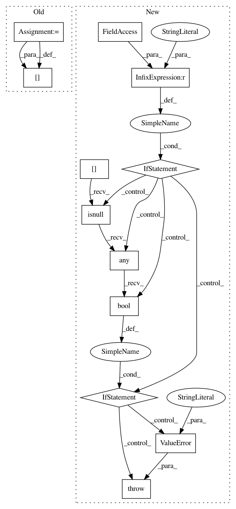

3526a6d7d5005d0cb126a39c894ad7f46b441260,category_encoders/basen.py,BaseNEncoder,fit,#BaseNEncoder#Any#Any#,92
Before Change
)
self.ordinal_encoder = self.ordinal_encoder.fit(X)
for col in self.cols:
self.digits_per_col[col] = self.calc_required_digits(X, col)
// do a transform on the training data to get a column list
X_t = self.transform(X, override_return_df=True)
self._encoded_columns = X_t.columns.values
// drop all output columns with 0 variance.
After Change
else:
self.cols = util.convert_cols_to_list(self.cols)
if self.handle_missing == "error":
if X[self.cols].isnull().any().bool():
raise ValueError("Columns to be encoded can not contain null")
// train an ordinal pre-encoder
self.ordinal_encoder = OrdinalEncoder(
verbose=self.verbose,
cols=self.cols,
handle_unknown="value",
In pattern: SUPERPATTERN
Frequency: 3
Non-data size: 12
Instances
Project Name: scikit-learn-contrib/categorical-encoding
Commit Name: 3526a6d7d5005d0cb126a39c894ad7f46b441260
Time: 2018-11-17
Author: jcastaldo08@gmail.com
File Name: category_encoders/basen.py
Class Name: BaseNEncoder
Method Name: fit
Project Name: scikit-learn-contrib/categorical-encoding
Commit Name: 3526a6d7d5005d0cb126a39c894ad7f46b441260
Time: 2018-11-17
Author: jcastaldo08@gmail.com
File Name: category_encoders/binary.py
Class Name: BinaryEncoder
Method Name: fit
Project Name: scikit-learn-contrib/categorical-encoding
Commit Name: 3526a6d7d5005d0cb126a39c894ad7f46b441260
Time: 2018-11-17
Author: jcastaldo08@gmail.com
File Name: category_encoders/basen.py
Class Name: BaseNEncoder
Method Name: transform